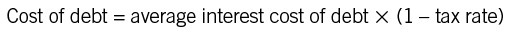
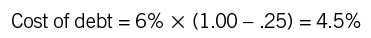
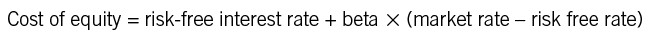
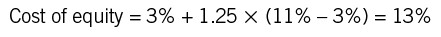
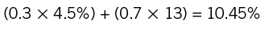
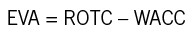
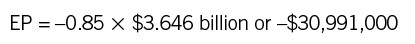

Toolbox
A STEP-BY-STEP GUIDE TO ANALYZING CAPITAL EXPENDITURES
You’ve been talking with your boss about buying a new piece of equipment for the plant, or maybe mounting a new marketing campaign. He ends the meeting abruptly. “Sounds good,” he says. “Write me up a proposal with the ROI and have it on my desk by Monday.”
Don’t panic: here’s a step-by-step guide to preparing your proposal.
1. Remember that ROI means return on investment—just another way of saying, “Prepare an analysis of this capital expenditure.” The boss wants to know whether the investment is worth it, and he wants calculations to back it up.
2. Collect all the data you can about the cost of the investment. In the case of a new machine, total costs would include the purchase price, shipping costs, installation, factory downtime, debugging, training, and so on. Where you must make estimates, note that fact. Treat the total as your initial cash outlay. You will also need to determine the machine’s useful life, not an easy task (but part of the art we enjoy so much!). You might talk to the manufacturer and to others who have purchased the equipment to help you answer the question.
3. Determine the benefits of the new investment, in terms of what it will save the company or what it will help the company earn. A calculation for a new machine should include any cost savings from greater output speed, less rework, a reduction in the number of people required to operate the equipment, increased sales because customers are happier, and so on. The tricky part here is that you need to figure out how all these factors translate into an estimate of cash flow, as we showed in chapter 27. Don’t be afraid to ask for help from your finance department—they’re trained in this kind of thing and should be willing to help.
4. Find out the company’s hurdle rate for this kind of investment. Calculate the net present value of the project using this hurdle rate. Remember to use your finance department—they should have a spreadsheet that ensures you’ll gather the data they believe is important and that you run the calculations the way they want them done.
5. Calculate payback and internal rate of return (the finance department’s spreadsheet probably includes those as well). You’ll probably get questions about what they are from your boss, so you need to have the answers ready.
6. Write up the proposal. Keep it brief. Describe the project, outline the costs and benefits (both financial and otherwise), and describe the risks. Discuss how it fits with the company’s strategy or competitive situation. Then give your recommendations. Include your NPV, payback, and IRR calculations in case there are questions about how you arrived at your results.
Managers sometimes go overboard in writing up capital expenditure proposals. It’s probably human nature: we all like new things, and it’s usually pretty easy to make the numbers turn out so that the investment looks good. But we advise conservatism and caution. Explain exactly where you think the estimates are good and where you think they may be shaky. Do a sensitivity analysis, and show (if you can) that the estimate makes sense even if cash flows don’t materialize at quite the level you hope. A conservative proposal is one that is likely to be funded—and one that is likely to add the most to the company’s value in the long run.
One more comment. There are times when doing this kind of analysis isn’t worth the time and trouble. Sometimes, for instance, a senior executive might ask you to justify a decision he has already made. There’s really no point in doing the analysis (unless you can’t get out of it). You will just have to fiddle with your assumptions and estimates until the numbers come out “right.” We know of a small software company (less than $50 million in annual revenue) whose owner decided he wanted a corporate jet. He asked the company controller to do an ROI analysis on the jet to make sure it made economic sense. When the controller’s numbers showed that the investment wasn’t even in the ballpark for a business this size, the owner asked him to redo the analysis with “new” information. The numbers still did not justify the jet. Never mind: last we heard, the owner was just waiting to close a big sale and then planned to buy the jet anyway.
Then, too, some investments are “no brainers” and don’t require detailed analysis. At Joe’s company, Setpoint, engineers generate several hundred dollars a day in gross profit when they are working on a valuable project. If an engineer’s CAD system goes down, he can’t generate that profit. So let’s imagine that Robert’s computer is getting old and periodically crashes. If it’s down for several days over the course of a year, the company might be forgoing thousands of dollars in gross profit. Meanwhile, a new computer costs $4,000. You don’t need NPV or IRR to figure out that the new one is worth the money.
CALCULATING THE COST OF CAPITAL
How does a company determine the interest rate or discount rate to use when it does capital budgeting analysis? To answer this question you need to figure out the company’s cost of capital.
Cost of capital can be a complex calculation. You’ll need to know several things about the company, including:
• What is the proportion of debt and equity that it uses to finance its operations?
• How volatile is the company’s stock?
• What is the overall interest cost on its debt?
• What are the prevailing interest rates in the market?
• What is the company’s current tax rate?
Answering these questions allows you to determine the minimum return or interest rate required to justify an investment.
Let’s look at an example. We’ll assume that the answers to the questions are as follows:
• The company finances its operations with 30 percent debt and 70 percent equity. (You can derive these percentages from the balance sheet.)
• The stock’s volatility, as measured by its beta, is 1.25. (Beta measures the volatility of a security compared with the market as a whole. Stocks that typically rise and fall with the market, like those of many large industrial companies, have a beta close to 1.0. More volatile companies, which tend to rise and fall more than the market, might have a beta of 2.0, and companies that are stable relative to the market, such as utilities, might have betas of 0.65. The higher the beta, the riskier the stock in the eyes of investors.)
• The average interest rate on the company’s debt is 6 percent.
• The interest rate on a risk-free US treasury bill is 3 percent; a typical investment in the stock market is expected to provide an 11 percent return.
• The company’s tax rate is 25 percent.
Armed with this information, we can determine the company’s weighted average cost of capital (WACC)—that is, the cost of its debt and equity weighted by the 70-to-30 percent ratio. The WACC is the minimum return that a company must earn on its asset base to satisfy creditors, owners, and everyone else who provides capital.
The first step is to calculate the cost of debt. Since the interest on debt is deductible for taxes, we need to look at both the interest rate and the tax rate to determine the after-tax cost. Here’s the formula:

So for our business this would be:

The next step is to calculate the cost of the company’s equity by using beta (risk) and prevailing interest rates. Here’s the equation:

In the example, it is as follows:

The analysis shows that this company has an after-tax cost of debt of 4.5 percent and a cost of equity of 13 percent.
Finally, we know that the company is 30 percent debt and 70 percent equity. So the weighted average cost of capital (WACC) would be:

The minimum return the business should get on its investments is 10.45 percent. That’s a return that justifies its use of capital.
As you look at the numbers, you might ask, “Why not use more low-cost debt and less high-cost equity? Wouldn’t that lower the business’s cost of capital?” It might—but it also might not. Taking on more debt increases risk. This perceived risk might increase the beta of the stock and thus raise the cost of equity still further. Extra risk might also persuade debtholders to demand a higher return. These increases might wipe out the gain from increasing debt.
A business’s finance group must determine the right mix of debt to equity to minimize its WACC. This mix is tough to get exactly right, and it changes as interest rates and perceived risks change. If the finance folks do get it right, they’re certainly earning their keep.
WACC is often considered the minimum return a business should earn on its capital investments. Most large companies evaluate their WACC annually and use it as a benchmark to set the hurdle rate for NPV and other capital budgeting calculations. In actually determining the hurdle rate, however, companies often add two or three percentage points to the WACC, just for a margin of error.
ECONOMIC VALUE ADDED AND ECONOMIC PROFIT—PUTTING IT ALL TOGETHER
Economic value added (EVA) and economic profit (EP) are widely used measures for assessing a firm’s financial performance. They measure much the same thing, but they are calculated slightly differently.
Economic value added, as far as we know, is the only measure that is actually a registered trademark of a consulting firm. (It is owned by the New York firm Stern Stewart & Co.) The underlying idea is this: a company adds value for its shareholders only if it earns a risk-adjusted profit greater than what it could have earned by investing that same capital elsewhere.
To calculate EVA and EP, you begin by calculating return on total capital (ROTC). Then you subtract the WACC. Proponents of the two measures point out that a company must incur costs to purchase the operating assets that it uses to generate profits, whether it uses equity or debt or some combination. To understand a company’s true profit, you ought to take those costs into account.
We’ll look at the same example we used in the previous entry and see how that company is doing by these measures. Remember that this company’s WACC was 10.45 percent. We’ll also say that its ROTC was 9.6 percent, just as in the example in chapter 21. Now here’s the formula for EVA:

So for our business, it is:
In short, the EVA for this company is negative. It earned a return for the capital providers that was nearly 1 percentage point lower than what they would typically expect. If the EVA for this business continues to be negative, shareholders and lenders will be likely to look elsewhere.
Now let’s look at what this negative EVA means for economic profit. EP converts the EVA percentage to a dollar amount; you just multiply EVA by total capital, calculated as we showed you in chapter 21. So if the total capital invested in the business is $3.646 billion as in the example in chapter 21, the calculation looks like this:

The capital providers are $31 million behind what they could reasonably expect from this business as a return.
What about the next year? Suppose that the company’s performance improves, and it achieves an ROTC of 12 percent. Its WACC, meanwhile, drops to 9.5 percent due to decreases in interest rates. The only thing that remains the same is total capital. Now its EVA is 12% – 9.5% or 2.5%, and its EP is 2.5% × $3.646 billion, or $91,150,000. That’s quite an improvement, and the providers of capital are no doubt happy.